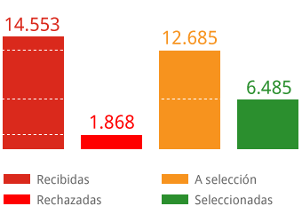

Asesoría y consejería para planear su posgrado
Contamos con un área de consejería académica que pone a su disposición recursos para la planeación de
sus estudios en el exterior, a través de los cuales ofrecemos información sobre educación internacional y brindamos orientación sobre oportunidades de estudios en el exterior.
Conozca toda la ayuda que ofrecemos...
Apoyo a personas fuera de Bogotá
Apoyamos a estudiantes sobresalientes, recién egresados de universidades públicas colombianas, profesores e investigadores por medio del
Semillero de Talentos Regionales, donde nuestro propósito es acercarnos a las regiones y trabajar conjuntamente
con sus alianzas.
Conozca el programa de Semilleros...
Financiamos su posgrado en el exterior
Los profesionales colombianos interesados en estudiar una maestría, doctorado y especializaciones, estas últimas solo en área de la salud, pueden
contar con nuestro Programa Crédito-beca. Este es un modelo de apoyo único en Colombia que le permite al estudiante solicitar un préstamo y obtener una condonación del 50%
o el 25%, sobre la deuda, según su área de estudio. Este programa solo financia programas presenciales y de tiempo completo y tiene como criterio único de selección la
excelencia académica del candidato y del programa que va a adelantar.
Lea todo acerca de la financiación...
Mejore su inglés en el exterior
Contamos con un Programa de Inglés que permite a los estudiantes y profesionales mejorar su inglés académico y laboral en destacadas universidades
de Estados Unidos, Reino Unido y Australia. COLFUTURO extiende a quienes toman este programa los beneficios económicos acordados con las entidades, las universidades y con
las agencias de viajes para los tiquetes aéreos. Además, según su nivel de inglés, pueden asistir a clases de su interés, y otros servicios adicionales que varian según
la entidad de educación.
Conozca los convenios y las características...
El mejor talento humano para su empresa
Uno de los propósitos de COLFUTURO es que nuestros beneficiarios regresen a Colombia y contribuyan con su conocimiento, al desarrollo del país.
Con el fin de facilitar su regreso al mundo laboral, creamos el Programa de Intermediación Laboral. Su objetivo es ser el puente entre las empresas y
organizaciones gubernamentales y no gubernamentales y nuestros beneficiarios.
Qué ofrecemos a las empresas...
NUESTRA GESTIÓN EN CIFRAS
Solicitudes de 1992 a 2012
TIPS
¿Cómo elegir un posgrado?
El proceso de selección de una universidad y de un posgrado en el exterior implica ciertos desafíos, por lo cual es muy importante hacer un buen ejercicio de planeación e investigar con anticipación.
DEFINA SUS METAS
Es muy importante tener claras las metas de su educación y de su carrera, así como la relación entre estas y su deseo de emprender estudios de posgrado.
CONSULTE UN CENTRO DE INFORMACIÓN Y ASESORÍA EN EDUCACIÓN INTERNACIONAL
Los asesores educativos y entidades como Icetex, Colciencias, las universidades, los centros binacionales y COLFUTURO están capacitados para brindar información y consejos a quienes desean estudiar en el exterior.
VERIFIQUE LA ACREDITACIÓN DE LA UNIVERSIDAD
Las clasificaciones de universidades o ‘rankings’ le pueden servir como punto de partida para tomar la decisión que sea más adecuada para usted.
DECIDA DÓNDE ENVIARÁ SUS SOLICITUDES
Suprima de su lista las instituciones que no satisfagan sus necesidades personales o las que imponen requisitos de admisión que no concuerdan con sus aptitudes. Reduzca el número de opciones de acuerdo a sus necesidades.